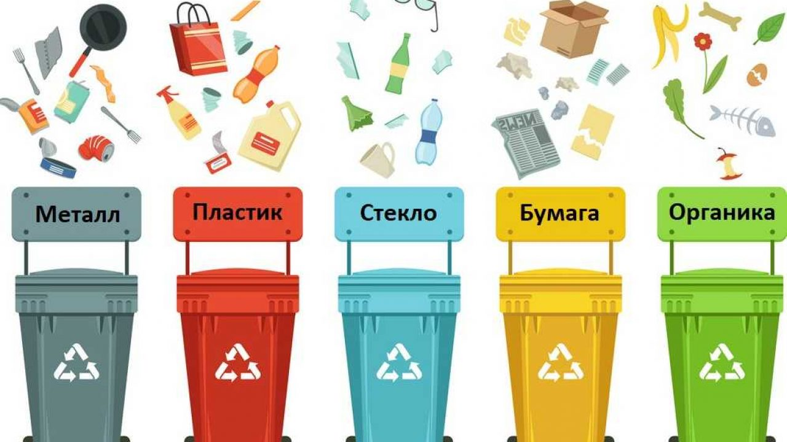

Быть экологичным — больше не блажь для тех, у кого много свободного времени, а настоящий мировой тренд, который не оставил равнодушными и казахстанцев. Мы стали задумываться о том, что мусор не исчезает сразу после того, как покидает порог нашего дома. А значит, с ним нужно что-то делать.  Так, в домах Казахстана начали появляться раздельные контейнеры для сортировки отходов. Очень важно, чтобы каждый человек у себя дома отделял мусор от отходов. В деревне всегда есть отдельное ведро, куда складываются органические отходы, потому что ты их потом можешь дать собаке, животным, компост сделать, и есть отдельное ведро для упаковок и так далее. Раньше это не было проблемой, а в городах это утрачивается. Переработка — это так же просто, как оставить после себя чистым уборную, хотя у нас и с этим проблемы. Нужно взять ответственность за то, что будет после тебя. Всё, что делает человек, должно иметь минимальные негативные последствия. И это не только вопрос о мусоре, но и о самих действиях ответственности. Для человека самое простое упражнение, которое в будущем сделает мир лучше — это сортировка отходов. Мусор — это упаковка, которая была сделана для вашего удобства. И наша обязанность — вернуть эту упаковку в таком виде, чтобы её можно было использовать снова.